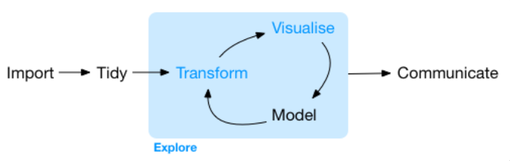
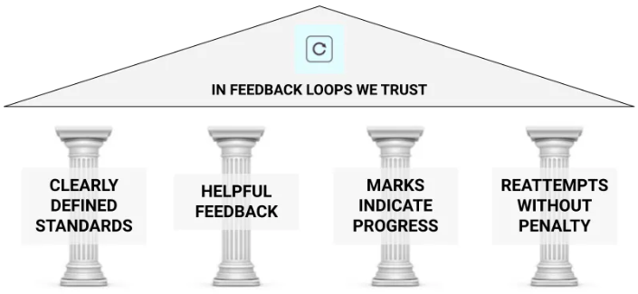

Welcome to Stat 313!
Warm-up
(90 seconds)
. . .
Why do you believe your discipline requires / expects you to take this course?
About Me…
Ph.D. in Statistics from Montana State University
B.S. in Mathematics & B.B.A. in Economics
from Colorado Mesa University
What is Statistics?
. . .
Scientists seek to answer questions using rigorous methods and careful observations. These observations – collected from the likes of field notes, surveys, and experiments – form the backbone of a statistical investigation and are called data.
Statistics is the study of how best to collect, analyze, and draw conclusions from data.
Introduction to Modern Statistics
What Statistics Is To Me

What you can expect in STAT 313
This course will teach you the fundamentals of linear models—simple linear regression, multiple linear regression, and analysis of variance—and experimental design. You will extend the concepts covered in your Stat I course, to:
- work with data in a reproducible way (using R)
- visualize and summarize a variety of datasets (in R)
- critically evaluate the use of Statistics
- perform statistical analyses to answer research questions (using R)
Coding 🙀
. . .
Coding is a huge part of how doing statistics in the wild looks.
. . .
- Everyone is coming from a different background
- Different aspects of the course will be difficult to different people
- You will be given coding resources each week
- Use your peers to support your learning
Course Components
Before Class
- Reading Guides
- Concept Quizzes
- R Tutorials
During Class
- Group Discussion
- Hands-on Activities
- Lab Assignments
Outside of Class
Statistical Critiques
Midterm Project
Final Project
Specifications Based Grading

. . .
Everyone is capable of earning an A!
How Smart are You?
(1 minute)
- Write two criteria would you use to rank yourself compared to everyone else in this class
(3 minutes)
- Talk with the person on your right about the criteria you proposed
(3 minutes)
- Share out
- Person with most vowels in name should be prepared to share!
Cooperative Learning
is a structured form of small-group learning
. . .
- Roles relate to how the work should be done
- Roles are not about breaking up the work intellectually
- Roles allow each person to contribute to the group in significant ways
- Each person’s participation is necessary to complete the task
Group Norms
Zero tolerance for: racism, sexism, homophobia, transphobia, ageism, ableism
Respect one another
Intent and impact both matter
Non-judgmental
Take space, make space – Share the air (page)
Embrace discomfort
Make decisions by consensus
How We Learn Together
No one is done until everyone is done
You have the right to ask anyone in your group for help
You have the duty to help anyone in your group who asks for help
Helping someone means explaining your thinking not giving answers or doing the work for them
Provide a justification when you make a statement
Think and work together – don’t divide up the work
Break
Warm-up
Sketch out what you recall the scientific method / process looking like.
. . .
Where does statistics happen?
Why?
For a scientific study, what is the purpose of a statistical analysis?
. . .
What does it mean for an analysis to be “objective”?
Dichotomous thinking
(90 seconds)
What is an example of a dichotomous choice?
. . .
(90 seconds)
How is dichotomous thinking used in Statistics?
The S-word
(60 seconds)
What are 2-3 synonyms of “significant” that come to your mind?
(90 seconds)
What is one issue you see with using the term “significant” to denote “small” p-values?